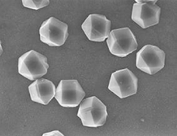
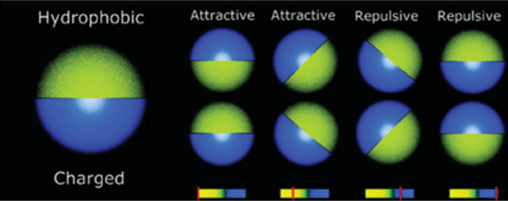

纳米粒子Matexcel能够合成具有不同尺寸，形状和尺寸的纳米材料，可提供独特的性能。纳米粒子可以是零维度，其长度，宽度和高度固定在单个点，一维，其具有可变长度，保留纳米区域中的两个维度（高度和宽度），二维可以拥有长度和宽度，例如具有不确定尺寸和厚度在1和100nm之间的区域的薄纳米层，或者具有诸如长度，宽度和高度的所有参数的三维。纳米棒或纳米线是一维纳米结构，被认为是电子和光电子学中的功能组件。具有嵌入量子结构的这种纳米结构的合成可以由于量子限制状态的形成而实现新的电学或光学性质。可以通过使用具有聚合物纳米结构的热解工艺制造的无定形碳纳米线已经用于穿透患病细胞和递送治疗药物。最近研究了环形金纳米颗粒的光学响应。与具有相似尺寸的固体金颗粒相比，纳米环表现出红移的局部表面等离子体，其可通过改变环厚度与半径的比率而在扩展的波长范围内调谐。
纳米金刚石纳米金刚石（ND）是类金刚石碳纳米颗粒。NDs由于其基于含碳炸药爆炸的低成本大规模合成，出色的机械性能，耐化学性，生物相容性以及独特的光学和电子特性而受到极大关注。它们也是无毒的，这使它们非常适合生物医学用途。生物技术研究已经证明了ND用于生物分析目的的前瞻性用途，例如蛋白质纯化或荧光生物标记。

纳米金刚石晶体。图片来自约翰C.安格斯，“钻石实验室”，凯斯西储大学，1998年。
Janus ParticleJanus颗粒是两个半球的表面与化学观点不同的颗粒。Janus这个词来自罗马神Janus，他通常代表两个头背靠背。Janus纳米粒子的研究在过去几年一直蓬勃发展，专注于新的制备策略和对其独特性质的研究。由于同时呈现两个不同的区域，Janus纳米颗粒可以设计成具有不同的疏水性，从而模拟表面活性剂的行为，它们还可以形成具有确定尺寸的稳定簇，并且显着降低两个不同相之间的界面张力。通常，Janus纳米粒子在纳米尺度上以分离的方式将不同的材料聚集在一起，

Janus颗粒不同侧面的相互作用势。转载自Jiang，Shan，et al。2010年高级材料。
纳米复合材料纳米复合材料是其中一种组分具有纳米结构尺寸的材料。由于其独特的物理和化学性质，使用具有聚合物，金属或陶瓷基质的纳米复合材料具有很大的潜力。例如，已经表明硅纳米颗粒的添加增加了聚合物基质的刚度。有机粘土，碳纳米纤维和碳纳米管基聚合物纳米复合材料已广泛应用于生物工程，涂层，电池，汽车，传感器，计算机和其他先进工业。凭借多年的材料化学和纳米技术知识和经验，Matexcel实验室可以提供从制备到表征的完整纳米复合材料包。
联系我们
 80 Orville Dr. Suite 100-10131，Bohemia，NY11716
80 Orville Dr. Suite 100-10131，Bohemia，NY11716
 美国：1-631-869-4956
美国：1-631-869-4956
 传真：1-631-910-2166
传真：1-631-910-2166
 电子邮件：info@matexcel.com
电子邮件：info@matexcel.com
 80 Orville Dr. Suite100-10131，Bohemia，NY 11716
80 Orville Dr. Suite100-10131，Bohemia，NY 11716 传真：1-631-910-2166
传真：1-631-910-2166 电子邮件：
电子邮件：